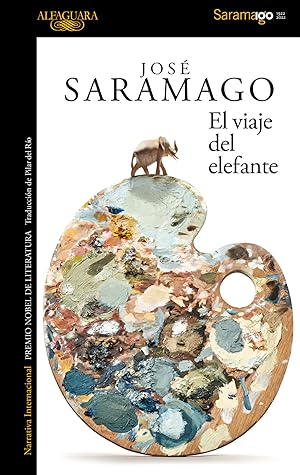

El viaje del elefante
Reseña por Jorge I. Zuluaga

Ver reseña en GoodReads (necesita cuenta)
Declaro a Saramago –al menos en esta instantánea de mi vida– mi autor favorito.
Leí este relato por recomendación de una estudiante de Ingeniería Aeroespacial de la Universidad de Antioquia, Luisa Fernanda Mendoza, amante también de Saramago y a quien le agradezco la pasión con la que me habló de la obra de este autor.
Ya había leído, antes de hablar con Fernanda, otros dos relatos clásicos de Saramago, "El evangelio según Jesucristo" y "Caín", pero tenía algunas reservas para meterle el diente a otras obras suyas; reservas que superé por las palabras de Fernanda. Debo decir que no soy un gran amante de la ficción, me gusta más el ensayo filosófico o científico y por eso no había querido abordar obras más "convencionales" de Saramago. Con "El viaje del elefante" quedé convencido de que todo lo que escribió este señor merece el tiempo que pueda dedicarle.
Y no es que este relato sea realmente "convencional"; es decir, en mi vaga clasificación no es una obra, como muchas de las obras de ficción que abundan en el mercado, que aborde la vida de personajes del presente y eventos relativamente normales de sus vidas.
"El viaje del elefante" pertenece –o así la clasifico yo– al subgénero de la que llamaré "novela histórica especulativa"; es decir, parece una novela histórica, pero muchos de los personajes que figuran en ella no existieron, o la novela combina personajes de tiempos diferentes, de espacios que difícilmente podrían haber estado en contacto en su tiempo, para crear la ilusión de una verdadera narración de índole histórica.
La única novela que había leído antes de este "subgénero", que repito acabo de inventar al calor de esta reseña, es la "Historia del rey transparente" de Rosa Montero. Pues bien, ahora no puedo más que admirar estas obras y a sus creadoras (Montero y Saramago). ¡Qué bellas ficciones históricas se han armado estas dos grandes personalidades de la literatura!
En la nota final de "El viaje del elefante", relato que fue escrito por Saramago en 2008 cuando ya había ganado el Premio Nobel de Literatura, el autor aclara que el origen de la idea que lo llevó a escribir la novela fue el supuesto viaje de un elefante indio desde la corte portuguesa en Lisboa hasta la ciudad de Viena, capital de Austria y una de las ciudades principales del Sacro Imperio Romano Germánico. Aunque esto parece darle realidad histórica al relato, y en él figuran como protagonistas algunos de los monarcas de los reinos e imperios de su tiempo, la mayoría de los personajes de la novela son completamente ficticios. El tiempo es el correcto, los lugares son los correctos, pero los eventos son completamente especulativos.
Lo mejor de los libros de Saramago, y siempre lo repetiré en mis reseñas de sus obras, es la manera espontánea, desde la distancia del presente, en la que narra sus historias. No sé si pasa en todas sus novelas –al menos ha pasado en las dos que he leído y en esta–, pero en "El viaje del elefante" escuchamos la voz de un narrador del siglo XXI que nos describe eventos del siglo XVI, como si fuera cercano a los personajes de la época, pero al mismo tiempo suelta aquí y allá referencias al presente. Así, es tan hábil describiendo las relaciones de parentesco entre los Habsburgo como hablando de las ayudas diagnósticas, resonancias magnéticas nucleares y radiografías de las que se pueden valer los veterinarios del presente. También hace reflexiones personales, e incluso critica su propia forma de narrar.
¡Sencillamente genial!
El protagonista indiscutido de "El viaje del elefante" es Subhro, el cornaca indio encargado de cuidar y conducir –si podemos decir así– al elefante. ¿Cornaca? También fue este mi primer contacto con esta extraña palabra que significa literalmente eso: la persona que se ocupa de un elefante indio.
Saramago logra magistralmente desmarcarse del legado colonial y racista de los relatos históricos europeos y presenta a Subhro como un personaje complejo, con una humildad propia de una persona en su situación en un país dominado por poderes absolutos, pero al mismo tiempo una persona capaz de enfrentar la autoridad intelectual o religiosa europea, de tomar iniciativas en una conversación con alguien de un estatus superior y, naturalmente, mucho mejor capacitada para entender a un animal como el elefante.
El elefante es el otro gran protagonista. Si bien Saramago no consigue acercarnos directamente a la mente del animal, y no creo que haya sido tampoco su propósito, los actos y las intenciones que describe Subhro nos pintan una personalidad para el elefante. Un elefante cuyos estados de ánimo cambian y que está muy orgulloso de decir, en el único aparte en el que Saramago le pone voz, que las personas están equivocadas cuando dicen que los elefantes tienen el color de los ratones, cuando la realidad es que son los ratones los que tienen color de elefante.
Me encantaron las descripciones que hace Saramago, el narrador, de los lugares por los que pasa la extraña comitiva que lleva el elefante a Viena. Pude comprobar usando Google Maps que todos los lugares, desde el pueblo más pequeño, pasando por los valles y ríos entre los Alpes, y que son descritos en "El viaje del elefante", existen. Me encantaría, aunque no lo he encontrado todavía, que alguien intentara hacer un mapa, inclusive reconstruir el viaje en carro o en moto.
En fin.
Una genialidad.
Ansioso por comenzar otro libro de Saramago.